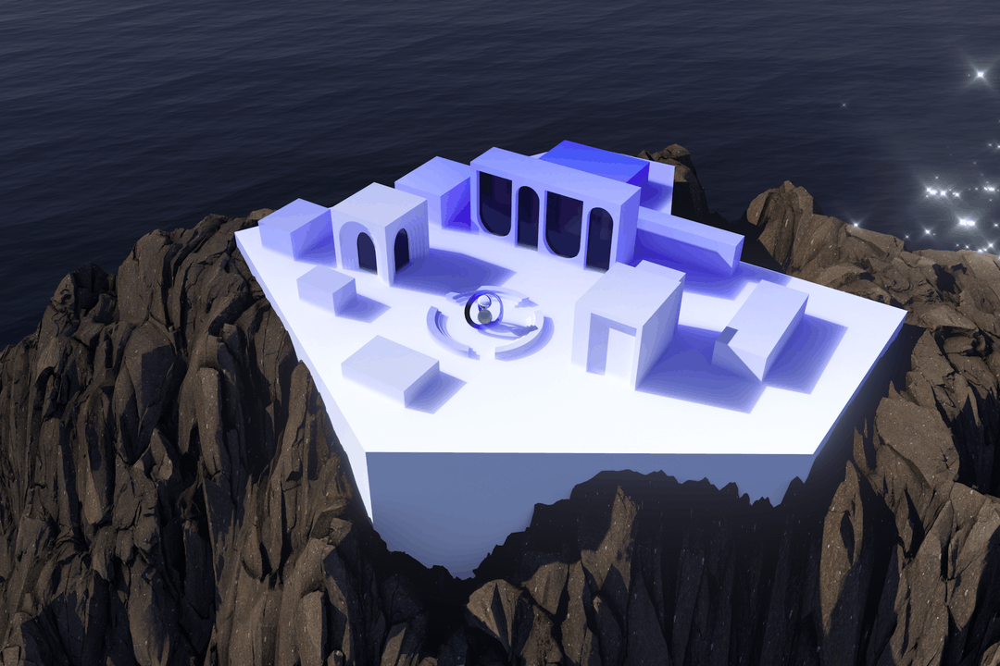

During this week, we were introduced to both 3D and 2D CAD softwares. Adding onto my existing knowledge of Computer aided draughting, it was informative to see the differences between vector and pixel drawing, and also NURBS vs mesh 3D drawings. What stood out to me is that a mesh is a collection of triangles, made of vertices and faces. NURBS on the other hand are vertices that are separated from each other. The CAD resources I used for this project were Sketchup and blender for 3D modeling, and Illustrator as a vector tool for making the poster. For the project, I decided to model a gallery.
The project is an extension on my on-going design project: A 3D model of an art gallery. To model the space, I used Sketchup, I decided to use it as it was familiar to me and 3D models, traditional CAD/CAM systems are often solids-based modelers and are very structured and hierarchical in their organization of the model.
1. I first drew inspiration for how I wanted the gallery to look like. Check out their campus here. I AM creative research institution has a digital campus that has an initiative called the Billion seconds institution. I drew inspiration from their digital campus and the aesthetics. I went on to make a model on sketchup where I would house digital art exhibitions and explorations.

2. After sketching I imported the model into blender. Here I changed texture properties and added lighting to add the atmosphere I wanted, similar to I AM’s campus.
As my model was an on going project, I went on to design a logo and event poster for upcoming online events that are to happen between February and March. I used the blend tool and some effects on text to make a poster. I also used the gradient tool for the logo of the digital art gallery.
The User Interface of Blender is quite tricky at first, but it is a brilliant platform to make anything that is 3D. In future I plan to make animations and renders through it.